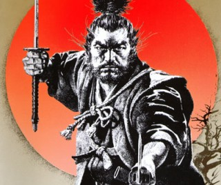

Musashi Miyamoto
1584 - 1645
The Greatest Samurai Of All Time
Miyamoto Musashi (宮本 武蔵, 1584 – 13 June 1645), also known as Shinmen Takezō,
Miyamoto Bennosuke or, by his Buddhist name, Niten Dōraku, was a Japanese swordsman,
philosopher, strategist, writer and rōnin, who became renowned through stories of his unique
double-bladed swordsmanship and undefeated record in his 61 duels (next is 33 by Itō Ittōsai).
Musashi, as he was often simply known, is considered a Kensei, a sword-saint of Japan. He was
the founder of the Niten Ichi-ryū, or Nito Ichi-ryū, style of swordsmanship, and in his final years
authored The Book of Five Rings (五輪の書, Go Rin No Sho) and Dokkōdō (The Path of Aloneness).
— Miyamoto Musashi, Go Rin No Sho
Bibliography
- Hyodokyo (The Mirror of the Way of Strategy)
- Hyoho Sanjugo Kajo (Thirty-five Instructions on Strategy)
- Hyoho Shijuni Kajo (Forty-two Instructions on Strategy)
- Dokkōdō (The Way to be Followed Alone)
- Go Rin No Sho (The Book of Five Rings; a reference to the Five Rings of Zen Buddhism). Translated into English by Victor Harris as A Book of Five Rings, London: Allison & Busby, 1974; Woodstock, New York: The Overlook Press.